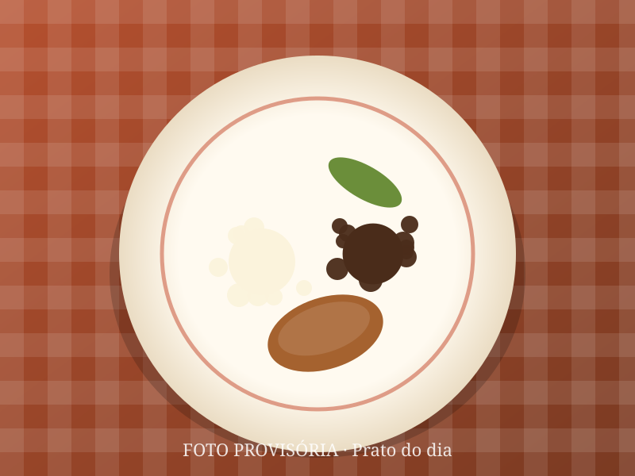
Exemplo provisório
Prato do dia — Exemplo 1
Descrição provisória: arroz, feijão, proteína e guarnição do dia.
R$ 00,00
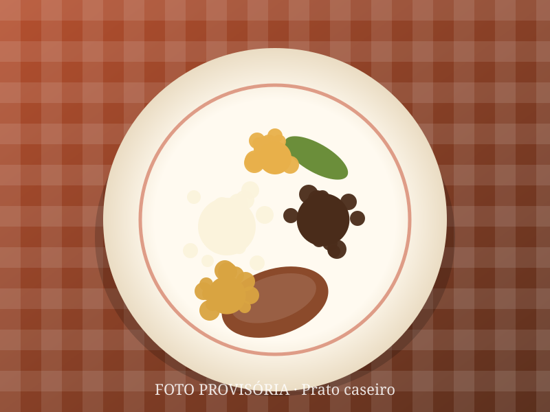
Águas Claras · Brasília-DF
Comida de vó, feita todo dia.
4,9 ★ no Google com mais de 3.700 avaliações
[Texto provisório — edite à vontade] Aqui o fogão não descansa: o feijão cozinha devagar, o tempero é feito na hora e cada prato sai com o mesmo cuidado de um almoço de domingo na casa da vovó.
Ingredientes frescos, receitas passadas de geração em geração e aquele gostinho que lembra casa. Chegue sem pressa, a mesa está posta.
Itens, fotos e preços abaixo são exemplos provisórios — troque pelos seus.

Descrição provisória: arroz, feijão, proteína e guarnição do dia.
R$ 00,00
Descrição provisória: troque pelo prato que você serve hoje.
R$ 00,00
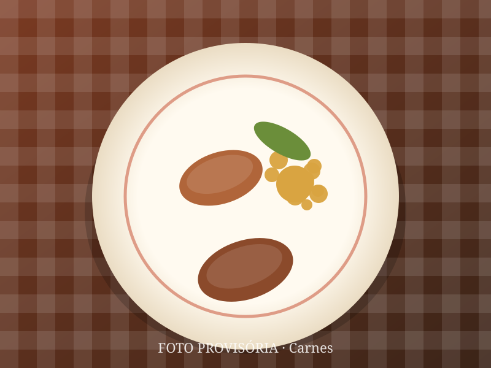
Descrição provisória: carne feita no tempero da casa.
R$ 00,00
Descrição provisória: acompanha farofa e vinagrete.
R$ 00,00
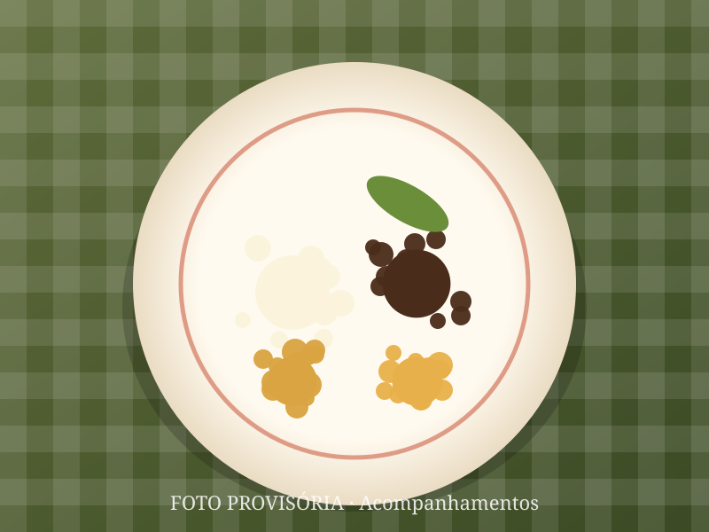
Descrição provisória: porção para dividir.
R$ 00,00
Descrição provisória: feito na hora.
R$ 00,00
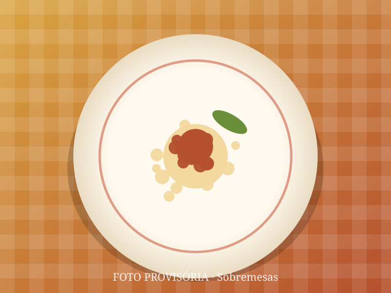
Descrição provisória: doce caseiro de panela.
R$ 00,00
Descrição provisória: receita de família.
R$ 00,00
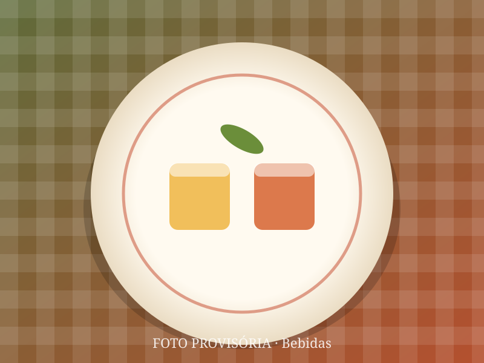
Descrição provisória: suco natural da fruta.
R$ 00,00
Descrição provisória: refrigerante ou água.
R$ 00,00
Espaços reservados para avaliações reais do Google.
[Cole aqui o texto de uma avaliação real do Google]
[Cole aqui o texto de uma avaliação real do Google]
[Cole aqui o texto de uma avaliação real do Google]
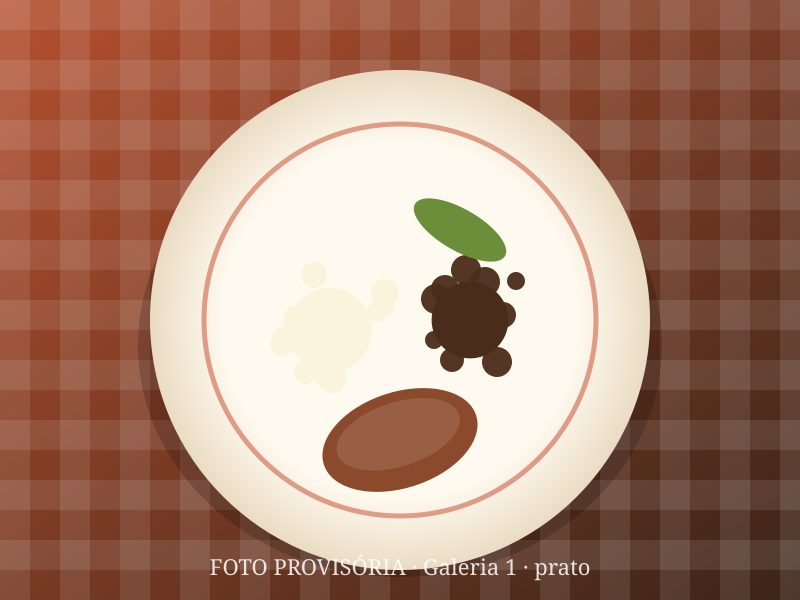
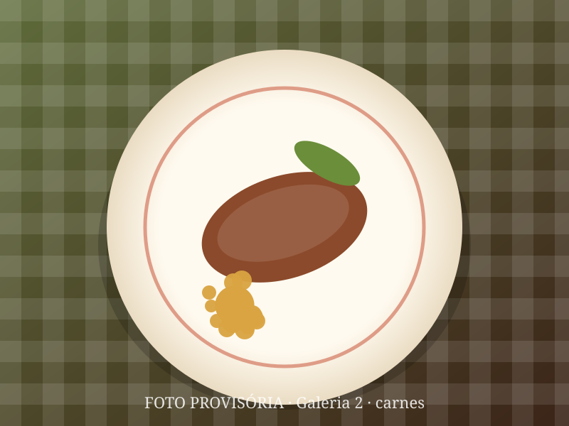
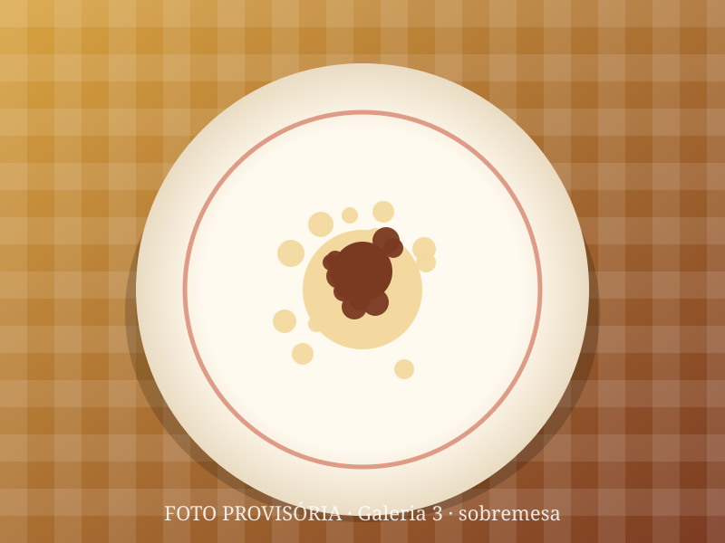
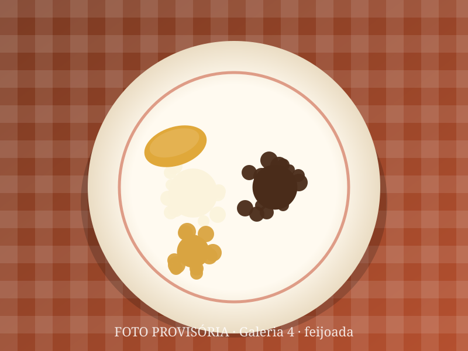
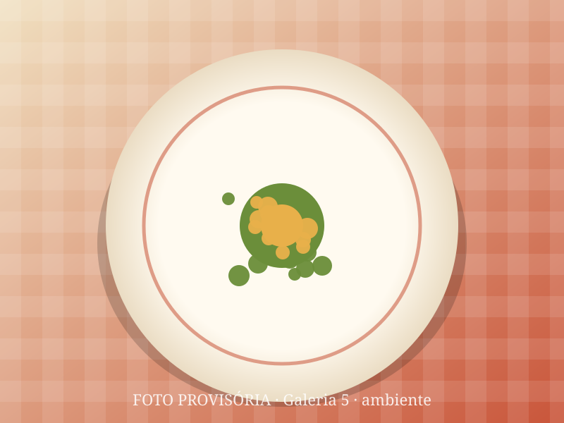
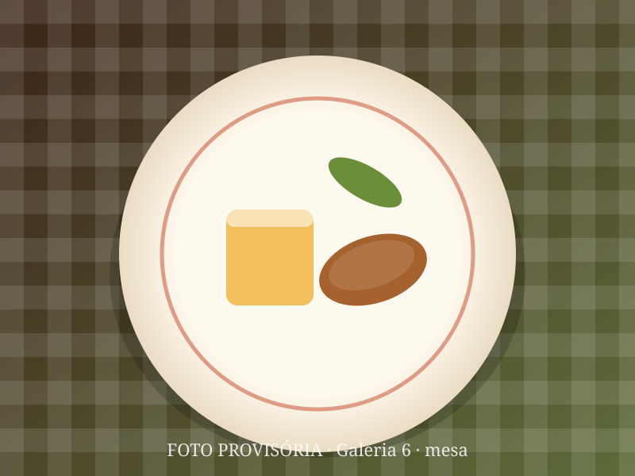